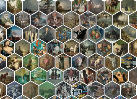

Hagrid — Gridify Scatterplots with Hilbert and Gosper Curves | HCI Stuttgart

Authors. Rene Cutura, Cristina Morariu, Zhanglin Cheng, Yunhai Wang, Daniel Weiskopf, Michael Sedlmair
Venue. VINCI (2021)
Abstract. A common enhancement of scatterplots represents points as small multiples, glyphs, or thumbnail images. As this encoding often results in overlaps, a general strategy is to alter the position of the data points, for instance, to a grid-like structure. Previous approaches rely on solving expensive optimization problems or on dividing the space that alter the global structure of the scatterplot. To find a good balance between efficiency and neighborhood and layout preservation, we propose Hagrid, a technique that uses space-filling curves (SFCs) to “gridify” a scatterplot without employing expensive collision detection and handling mechanisms. Using SFCs ensures that the points are plotted close to their original position, retaining approximately the same global structure. The resulting scatterplot is mapped onto a rectangular or hexagonal grid, using Hilbert and Gosper curves. We discuss and evaluate the theoretic runtime of our approach and quantitatively compare our approach to three state-of-the-art gridifying approaches, DGrid, Small multiples with gaps SMWG, and CorrelatedMultiples CMDS, in an evaluation comprising 339 scatterplots. Here, we compute several quality measures for neighborhood preservation together with an analysis of the actual runtimes. The main results show that, compared to the best other technique, Hagrid is faster by a factor of four, while achieving similar or even better quality of the gridified layout. Due to its computational efficiency, our approach also allows novel applications of gridifying approaches in interactive settings, such as removing local overlap upon hovering over a scatterplot.
Acknowledgements. This work was supported by the BMK FFG ICT of the Future program via the ViSciPub project (no. 867378), and by the Deutsche Forschungsgemeinschaft (DFG, German Research Foundation) – Project-ID 251654672 – TRR 161.